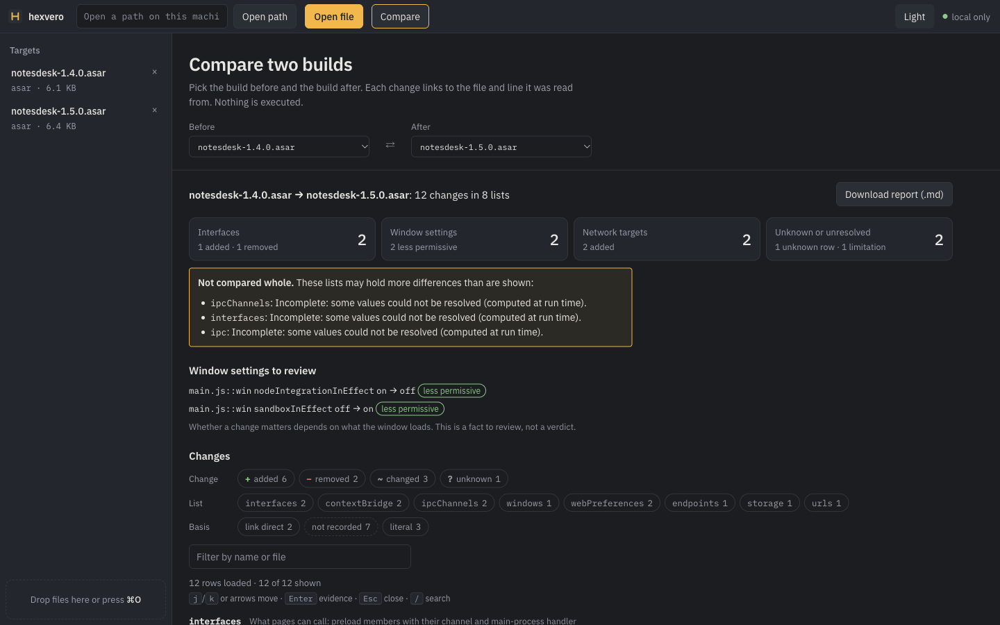
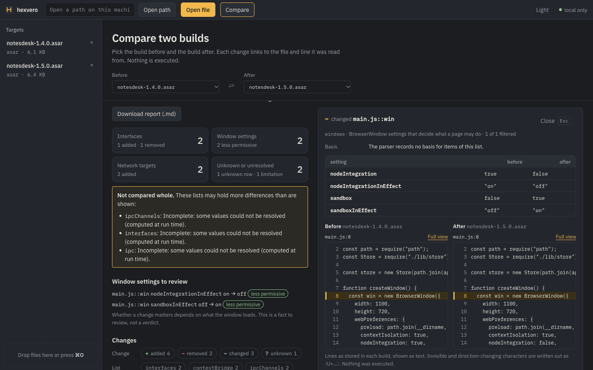
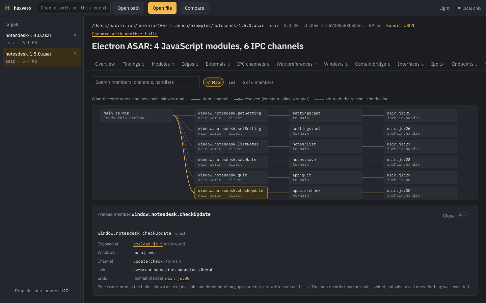

The interfaces pages can call, window settings and network hosts that changed between two builds, with the file and line on both sides, what could not be established, and a policy gate for CI. Locally, without executing the target.
npx hexvero demo
Needs Node.js 22.12 or newer. Copies two builds of an example Electron app and a policy
into ./hexvero-demo and shows what changed between them.

The local web UI comparing NotesDesk 1.4.0 and 1.5.0, the example builds in the repository. A screenshot of real output.
For Electron developers and security engineers who review what a release changed, and for coding agents doing the same work over MCP.
Two releases of an example app and a policy, in one command.
$ npx hexvero demo
interfaces (2)
+ preload.js::notesdesk::checkUpdate @ b: preload.js:9, handler main.js:30 · link direct
…
ipcChannels (2)
+ update:check @ b: receiver main.js:30, sender preload.js:9
? shell:open @ a: receiver main.js:30, sender preload.js:9
the other side has values there that could not be resolved
Every change with the place it was read from. In the UI and the HTML report, the lines of both builds side by side.
$ hexvero compare hexvero-demo/notesdesk-1.4.0.asar hexvero-demo/notesdesk-1.5.0.asar --report report.html
…
✓ report.html (33298 bytes)
A JSON policy over the same comparison: exit 3 on a new member, host or
more permissive window; 4 when it cannot decide.
$ hexvero check hexvero-demo/notesdesk-1.4.0.asar hexvero-demo/notesdesk-1.5.0.asar --policy hexvero-demo/policy.json hexvero check fail: the policy is violated … $ echo $? 3
From the example: release 1.5.0 adds an IPC channel whose handler fetches a URL.
main.js line 30 registers a handler for
update:check; preload.js line 9 sends on it. Both were read
from the archive as written.
window.notesdesk.checkUpdate:
the preload member and the handler use the same channel (link direct).
Whether any page calls it is not something a static reading can show.
main.js:33, ipc_channel_unresolved).
So shell:open, present only in 1.4.0, is reported as unknown: the other
build has a channel there that could not be named.
update:check
ipcChannels
main.js:30sender preload.js:9
28ipcMain.handle("notes:save", (_e, note) => store.push("notes", note));29ipcMain.on("app:quit", () => app.quit());30ipcMain.handle("update:check", async () => fetch("https://updates.notesdesk.example/latest.json").then((r) => r.json()));31// The channel name comes from the environment at run time, so no static reading can name it.32for (const plugin of (process.env.NOTESDESK_PLUGINS ?? "").split(",").filter(Boolean))
A static finding says what the code contains. It does not show that the code runs, or that anything is exploitable.

Before and after: the changed window with main.js:8 of both builds. Real
output.

The interface map: window → preload member → channel → main-process handler, and how each link was read. Real output for NotesDesk 1.5.0.
hexvero check applies a policy to the comparison of the build you shipped and
the build you are about to ship. A real run on the example builds:
$ hexvero check hexvero-demo/notesdesk-1.4.0.asar hexvero-demo/notesdesk-1.5.0.asar --policy hexvero-demo/policy.json
hexvero check fail: the policy is violated
before notesdesk-1.4.0.asar · after notesdesk-1.5.0.asar · policy policy.json
✗ new-interface-member notesdesk.checkUpdate new · fail
New interface member notesdesk.checkUpdate is exposed to pages.
@ b: preload.js:9, handler main.js:30 · link direct · fingerprint 40aa15f76bfd9988f9302d187c03c61d
✗ new-external-host updates.notesdesk.example new · fail
New external host updates.notesdesk.example, not in the allow list (https://updates.notesdesk.example/latest.json).
@ b: main.js:30 · literal · fingerprint 68312dcec55422c3b8affec165b21b83
Accept what is there now: add --baseline <file> --update-baseline, or a suppression with the fingerprint and a reason in the policy.
Exit 3. After
--baseline .hexvero/baseline.json --update-baseline accepts the two findings,
the same run exits 0. Exit codes: 0 pass,
1 technical error, 2 usage or invalid policy,
3 violated, 4 not decidable (an unknown under
"unknown": "fail"). Output as text, JSON, Markdown or SARIF 2.1.0.
From
docs/ci.md:
the check job with contents: read, the SARIF upload as a separate job with
security-events: write, skipped for pull requests from forks.
hexvero check is in hexvero 0.9.0 and later.
name: Release policy
on:
pull_request:
push:
branches: [main]
permissions:
contents: read
jobs:
check:
runs-on: ubuntu-latest
steps:
- uses: actions/checkout@3d3c42e5aac5ba805825da76410c181273ba90b1 # v7
with:
persist-credentials: false
- uses: actions/setup-node@949feb2413d6458794dcd2491c4babbbce0c15c1 # v7
with:
node-version: 24
# Build your app and fetch the previous release here, e.g. into previous/ and dist/.
- name: hexvero check
run: |
set +e
npx --yes hexvero@0.9.1 check previous/app.asar dist/app.asar \
--policy .hexvero/policy.json --baseline .hexvero/baseline.json \
--format sarif --out hexvero.sarif
code=$?
set -e
npx --yes hexvero@0.9.1 check previous/app.asar dist/app.asar \
--policy .hexvero/policy.json --baseline .hexvero/baseline.json \
--format markdown >> "$GITHUB_STEP_SUMMARY" || true
exit "$code"
- if: always()
uses: actions/upload-artifact@ea165f8d65b6e75b540449e92b4886f43607fa02 # v4
with:
name: hexvero-sarif
path: hexvero.sarif
if-no-files-found: ignore
upload:
needs: check
if: >-
always() &&
(github.event_name != 'pull_request' ||
github.event.pull_request.head.repo.full_name == github.repository)
runs-on: ubuntu-latest
permissions:
contents: read
security-events: write
steps:
- uses: actions/download-artifact@d3f86a106a0bac45b974a628896c90dbdf5c8093 # v4
with:
name: hexvero-sarif
- uses: github/codeql-action/upload-sarif@b96794f015dfd88f77b49b1c93e0fa7110f94c63 # v4.38.0
with:
sarif_file: hexvero.sarif
category: hexvero-check
A pass means hexvero found nothing new against the policy in what it read. It is not a
proof that the app cannot do these things at run time. SARIF locations are paths inside
the analyzed build (hexvero-build/after/…), never mapped onto your sources.
npx hexvero compare old.asar new.asar --report report.html npx hexvero check old.asar new.asar --policy policy.json npx hexvero ui --demo --open
The UI binds to 127.0.0.1 with a per-session token. Fonts are bundled; nothing is loaded from the network. The HTML report is one offline file.
npx hexvero setup --apply # registers the server npx hexvero setup --skill --apply # installs the skill
16 tools, including hexvero_check for the same policy. Answers are small
pages with suggested next calls; text from the target is marked as data, not
instructions. With a cloud-hosted agent, what the agent reads goes to its model
provider.
app.asar.unpacked) and app foldersipcMain and window options
built with Object.assign. Absence from a list is weaker evidence than
presence.
ipcMainManager.handle, 45 of 46 bridge members are now linked to a
main-process handler (0.8.0: none).
${…} or listed as unresolved,
never guessed; an item they might hide is unknown, not removed.
Methods and numbers: README, Limits · blind set holdout5 (round 4) · Electron Fiddle case study · Electron rules
Open source under MIT. If it showed you something true about a release, a star on GitHub helps other people find it. A bug report naming a wrong or missing fact helps more.
GitHub Report a wrong fact